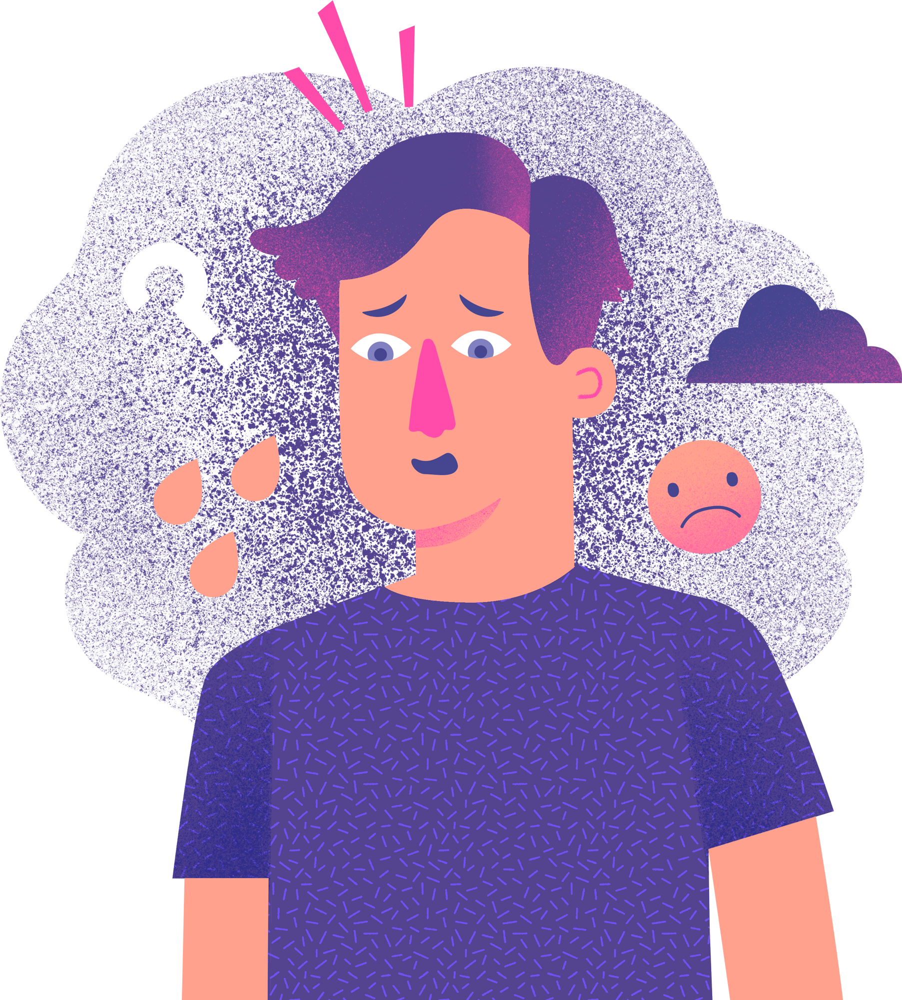

Jak mluvit s dětmi o rozvodu: Praktický průvodce pro rodiče

Rozvod je jedním z nejnáročnějších momentů v životě rodiny. Pro děti je to často chvíle, kdy se jim hroutí celý svět. To, jak jim tuto novinu sdělíte, může zásadně ovlivnit, jak se s celou situací vyrovnají.
Mnoho rodičů své rozhodnutí odkládá z obavy, že dětem ublíží. Pravdou ale je, že děti cítí napětí v rodině dávno předtím, než padne slovo "rozvod". Upřímnost – přiměřená věku – je často lepší než nejistota.
1. Připravte se předem
Než předstoupíte před děti, měli byste mít s partnerem alespoň základní shodu na tom, co řeknete. Ideální je, když to dětem oznámíte společně. Ukážete tím, že i když se jako partneři rozcházíte, jako rodiče fungujete dál.
Co by mělo zaznít:
- Dohodli jsme se, že už spolu nebudeme bydlet.
- Stále jsme vaši máma a táta a oba vás milujeme.
- Není to vaše vina. Je to záležitost nás dospělých.
2. Zvolte správný čas a místo
Vyberte klidnou chvíli, třeba víkendové dopoledne, abyste měli dostatek času na reakce a následné otázky. Vyhněte se večerům (děti mohou mít problém usnout) nebo chvílím těsně před odchodem do školy.
3. Reakce mohou být různé
Každé dítě reaguje jinak. Některé bude plakat, jiné se naštve, a další může vypadat, že mu to je jedno a půjde si hrát. Všechny reakce jsou normální.
"Nejdůležitější je, abyste uznali jejich pocity. 'Vidím, že jsi smutný/á, a to je v pořádku. I pro nás je to smutné.'"
"Nejdůležitější je, abyste uznali jejich pocity. 'Vidím, že jsi smutný/á, a to je v pořádku. I pro nás je to smutné.' Dítě potřebuje vědět, že jeho emoce nejsou 'špatné'."

4. Jak komunikovat efektivně?
Existují slova, která staví mosty, a slova, která staví zdi. Podívejte se na jednoduché srovnání, čemu se vyhnout.
| Co raději neříkat | Co říci místo toho |
|---|---|
| "Tvůj otec nás opustil." | "S tatínkem už si nerozumíme jako partneři, ale tebe oba milujeme." |
| "Neplač, to bude dobrý." | "Je to těžké, já vím. Jsem tady s tebou." |
| "Musíš se rozhodnout, s kým chceš bydlet." | "My se domluvíme tak, abys se měl/a co nejlépe." |
Video: Jak to zvládli jiní
Ke stažení
Potřebujete se poradit?
Náš online kurz vám dá přesné návody a scénáře pro každou věkovou kategorii.
Zobrazit kurz